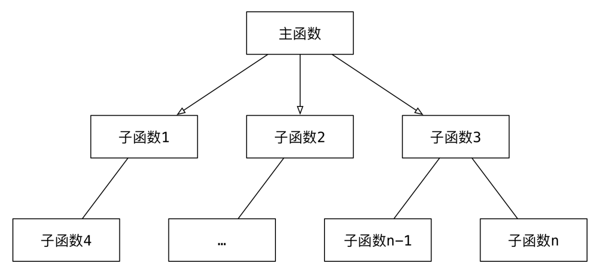
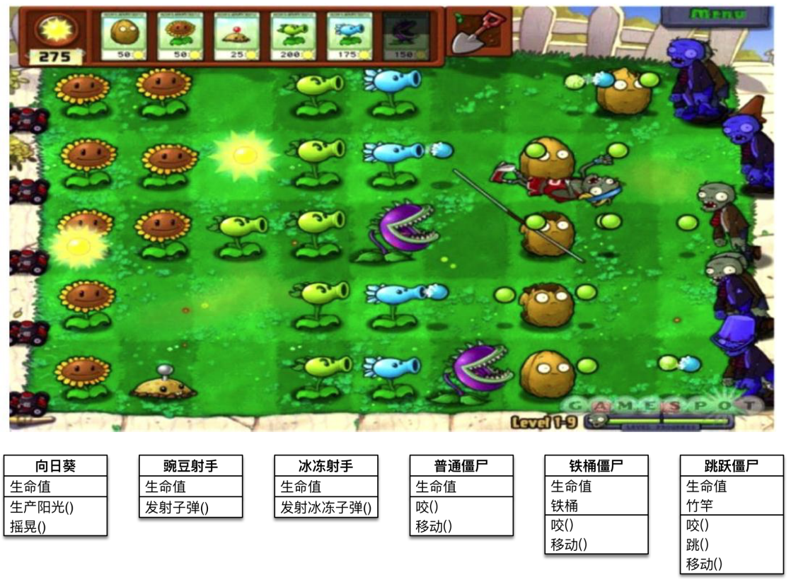
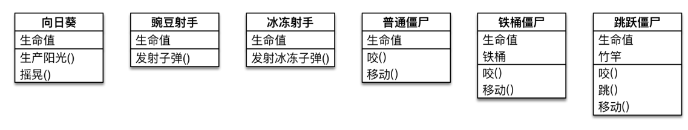
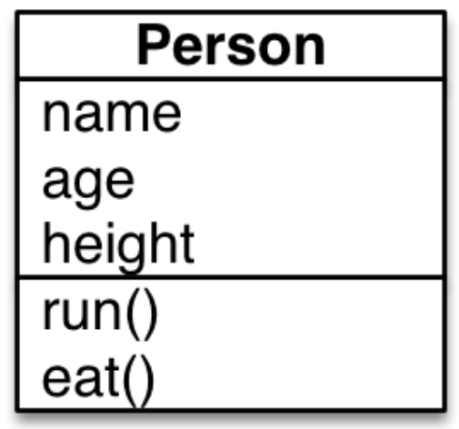

初识Python面向对象
面向对象的基本概念
我们之前学习的编程方式就是面向过程的
面向过程和面向对象，是两种不同的编程方式
对比面向过程的特点，可以更好地了解什么是面向对象
过程和函数（科普）
过程 是早期的一个编程概念
过程 类似于函数，只能执行，但是没有返回值
函数 不仅能执行，还可以返回结果
面向过程和面向对象 基本概念
1) 面相过程 —— 怎么做？
把完成某一个需求的 所有步骤 从头到尾 逐步实现
根据开发需求，将某些 功能独立 的代码 封装 成一个又一个 函数
最后完成的代码，就是顺序地调用 不同的函数
特点
注重 步骤与过程，不注重职责分工
如果需求复杂，代码会变得很复杂
开发复杂项目，没有固定的套路，开发难度很大！

2) 面向对象 —— 谁来做？
相比较函数，面向对象 是 更大 的 封装，根据 职责 在 一个对象中 封装 多个方法
在完成某一个需求前，首先确定 职责 —— 要做的事情（方法）
根据 职责 确定不同的 对象，在 对象 内部封装不同的 方法（多个）
最后完成的代码，就是顺序地让 不同的对象 调用 不同的方法
特点
注重 对象和职责，不同的对象承担不同的职责
更加适合应对复杂的需求变化，是专门应对复杂项目开发，提供的固定套路
需要在面向过程基础上，再学习一些面向对象的语法

类 和 对象 是 面向对象编程的 两个 核心概念
类的概念
类是对一群具有相同特征或者行为的事物的一个统称，是抽象的，不能直接使用
- 特征 被称为 属性
- 行为 被称为 方法
类 就相当于制造飞机时的图纸，是一个 模板，是 负责创建对象的
对象的概念
对象 是 由类创建出来的一个具体存在，可以直接使用
由哪一个类创建出来的对象，就拥有在哪一个类中定义的：
- 属性
- 方法
对象 就相当于用 图纸 制造 的飞机
在程序开发中，应该 先有类，再有对象
对象是类具体化的结果
类和对象的关系
类是模板，对象 是根据 类 这个模板创建出来的，应该 先有类，再有对象
类只有一个，而对象可以有很多个
- 不同的对象 之间 属性 可能会各不相同
类 中定义了什么 属性和方法，对象 中就有什么属性和方法，不可能多，也不可能少
类的设计
在使用面相对象开发前，应该首先分析需求，确定一下，程序中需要包含哪些类！

在程序开发中，要设计一个类，通常需要满足一下三个要素：
类名 这类事物的名字，满足大驼峰命名法
属性 这类事物具有什么样的特征
方法 这类事物具有什么样的行为
大驼峰命名法
1 | |
每一个单词的首字母大写
单词与单词之间没有下划线
类名的确定
名词提炼法 分析 整个业务流程，出现的 名词，通常就是找到的类
属性和方法的确定
对 对象的特征描述，通常可以定义成 属性（类的本身所具有的特性，叫做属性）
对象具有的行为（动词），通常可以定义成 方法（用类去定义的的对象所具备的可操作的能力叫做方法）
提示：需求中没有涉及的属性或者方法在设计类时，不需要考虑
练习 1
需求
小明 今年 18 岁，身高 1.75，每天早上 跑 完步，会去 吃 东西
小美 今年 17 岁，身高 1.65，小美不跑步，小美喜欢 吃 东西

类的结构
1 | |
class 是关键字与def用法相同，定义一个类。
Human是此类的类名，类名使用驼峰(CamelCase)命名风格，首字母大写，私有类可用一个下划线开头。
类的结构从大方向来说就分为两部分：
静态变量
动态方法
从类名的角度研究类
类名操作静态属性
查看类中的所有内容：类名.dict方式。
1 | |
万能的点.
1 | |
对以上两种做一个总结：如果想查询类中的所有内容，通过 第一种dict方法，如果只是操作单个属性则 用万能的点的方式。
类名操作动态方法
1 | |
从对象的角度研究类
对象
对象是从类中出来的，只要是类名加上()，这就是一个实例化过程，这个就会实例化一个对象。
1 | |
其实实例化一个对象总共发生了三件事：
在内存中开辟了一个对象空间。
自动执行类中的init方法，并将这个对象空间（内存地址）传给了init方法的第一个位置参数self。
在init 方法中通过self给对象空间添加属性。
1 | |
对象操作对象空间属性
对象查询对象中所有属性。 对象.__dict__
1 | |
对象操作对象中的单个属性。 万能的点.
1 | |
对象查看类中的属性
1 | |
类中的方法一般都是通过对象执行的（出去类方法，静态方法外），并且对象执行这些方法都会自动将 对象空间传给方法中的第一个参数self.
self其实就是类中方法（函数）的第一个位置参数，只不过解释器会自动将调用这个函数的对象传给 self。所以咱们把类中的方法的第一个参数约定俗成设置成self, 代表这个就是对象。
一个类可以实例化多个对象
类的内置函数
| 序号 | 方法名 | 类型 | 作用 |
|---|---|---|---|
| 01 | __new__ | 方法 | 创建对象时，会被 自动 调用 |
| 02 | __init__ | 方法 | 对象被初始化时，会被 自动 调用 |
| 03 | __del__ | 方法 | 对象被从内存中销毁前，会被 自动 调用 |
| 04 | __str__ | 方法 | 返回对象的描述信息， print 函数输出使用 |
| 05 | __dir__ | 方法 | 查看对象内的所有属性以及方法 |